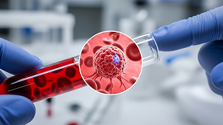
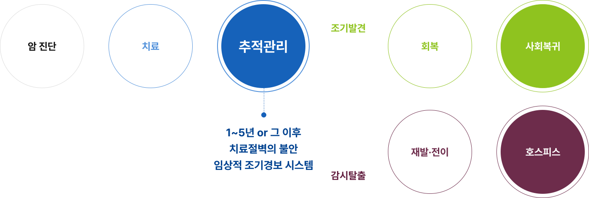
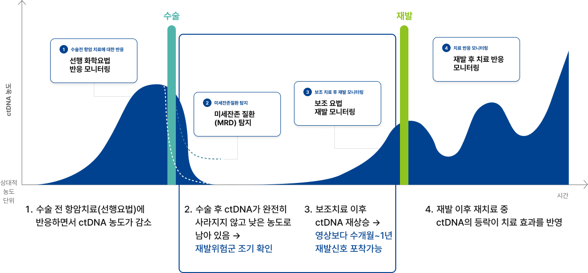
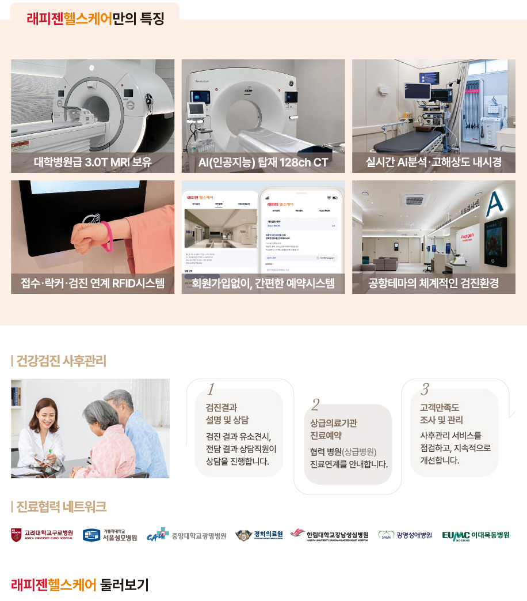

암 생존자 추적관리 프로그램
치료 후가 관리의 시작입니다
증상이 없어도, 혈액에는 신호가 먼저 나타날 수 있습니다.
정기적인 추적관리 검사로 더 이른 시점에 파악하세요.
불안을 해소하기 위해서는 감시 도구를 정교히 하고
정기적으로 상태를 확인해야 합니다
치료 이후 재발에 대한 불안은 크지만, 현행 추적관리는 구조적 한계로 인해 조기 발견과 관리에 어려움이 있습니다.
영상 검사나 종양표지자 등으로는 발견하기 어려운 미세 잔존암, 이제 액체 생검으로 확인할 수 있습니다.
영상 검사의 물리적 한계
CT·MRI는 종양이 일정 크기 이상이 되어야 확인됩니다. 재발 초기 단계에서는 발견이 어려울 수 있습니다.

종양표지자 검사의 민감도
혈액 종양표지자는 암 종에 따라 신뢰도 차이가 있으며, 재발 초기에 수치 변화가 나타나지 않는 경우도 있습니다.
치료의 절벽
(Therapeutic Cliff)
치료 종료 후 체계적 추적관리가 단절되는 경우가 많아, 환자와 가족이 재발 불안을 홀로 감당하게 됩니다.
맞춤형 장기 모니터링 부재
국내 암 생존자들은 개인별 상황을 고려한 체계적 장기 추적관리 시스템의 부재를 주요 어려움으로 경험하고 있습니다.
조기에 발견하면 치료할 수 있지만,
재발을 놓치면 치료 기회를 잃을 수 있습니다

암 생존자 정밀 추적관리 프로그램
액체 생검, Guardant Reveal이란?
한 번의 채혈로 눈에 보이지 않는 암의 흔적을 찾아내는 검사입니다.
영상검사로 확인되기 어려운 초기 변화도 혈액에서 먼저 확인할 수 있습니다.
검사 원리
혈액 속에는 암세포가 남긴 미세한 DNA 신호가 존재합니다.Guardant Reveal 검사는 이 신호를 분석해 재발 가능성을 조기에 확인하는 기술입니다.
채혈만으로 검사
복잡한 검사 없이 간단한 혈액 채취로 진행됩니다.
반복 검사 가능
치료 이후에도 정기적으로 확인할 수 있습니다.
재발 조기 확인
증상이 나타나기 전에 변화를 먼저 확인할 수 있습니다.
임상 데이터 기반
대규모 임상 연구를 바탕으로 신뢰할 수 있는 검사입니다.
암세포는 눈에 보이기 훨씬 전부터
혈액 속에 미세한 흔적(DNA)을 남깁니다
영상검사에서 종양이 보이려면 많은 세포가 모여야 하지만,
혈액 검사는 그보다 훨씬 이른 단계에서 재발의 신호를 먼저 확인할 수 있습니다.

암 생존자 추적관리 프로그램
자주 묻는 질문을 확인해 보세요
누가 암 생존자 추적관리 프로그램(가던트리빌) 대상자에 해당하나요?
기존 건강검진 항목이나 병원 외래 진료와 비교할 때 어떤 차이점이 있나요?
검사 전 준비사항이 있나요? 결과는 어떻게 해석하고 관리해야 하나요?
단, 이 검사는 미세 잔존암 여부를 판별하는 고도의 전문적인 영역이므로, 검사 결과에 대한 정확한 해석과 향후 관리 방향은 반드시 종양내과 전문의와의 진료 및 상담을 통해 확인하셔야 합니다. 또한, 수령하신 검사 결과지는 스마트 건강관리 파트너인 암 오케이앱에 업로드하시는 것을 적극 권장합니다. 앱을 통해 소중한 검사 기록을 안전하고 체계적으로 누적 보관하며, 암 생존자를 위한 맞춤형 건강 관리 서비스를 더욱 편리하게 누리실 수 있습니다.
검사는 ㈜다우바이오메디카를 통해
'래피젠헬스케어의원'에서 받을 수 있습니다.
검사는 연구용(Research Use Only, RUO)으로 제공되며,
의료진의 판단과 상담 하에서만 시행될 수 있습니다.
출처 : 국가암지식정보센터
아래 버튼을 통해 상담 신청하시면
상담원이 전화를 드려 친절하게 안내해드립니다.
